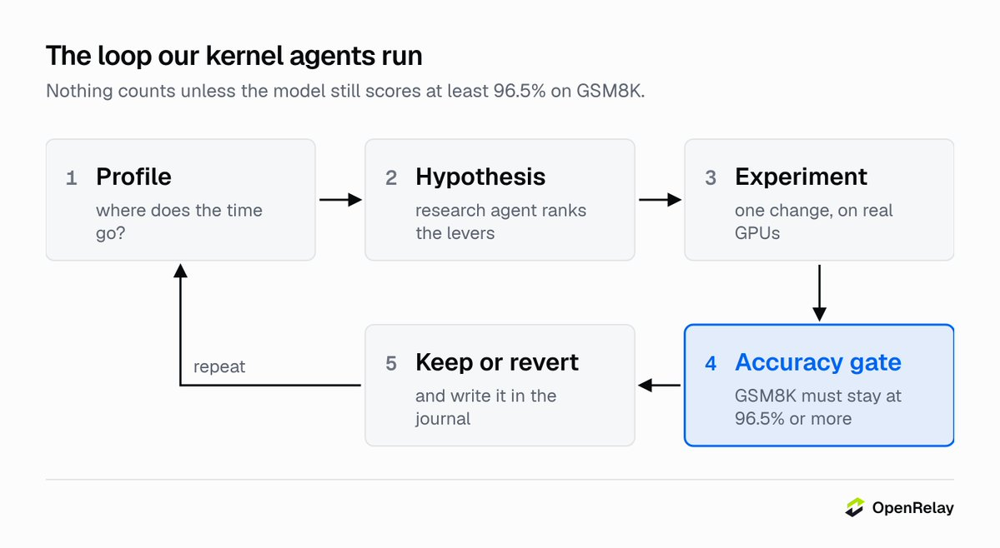
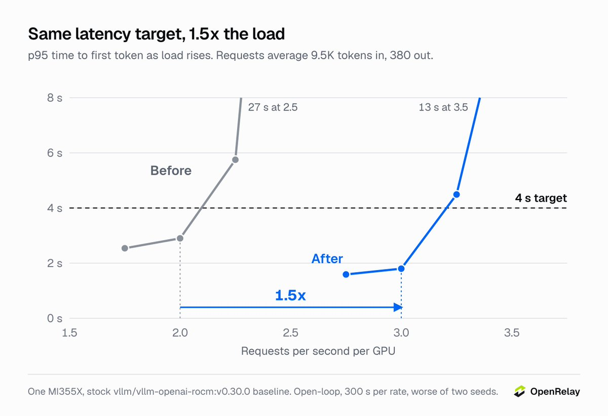
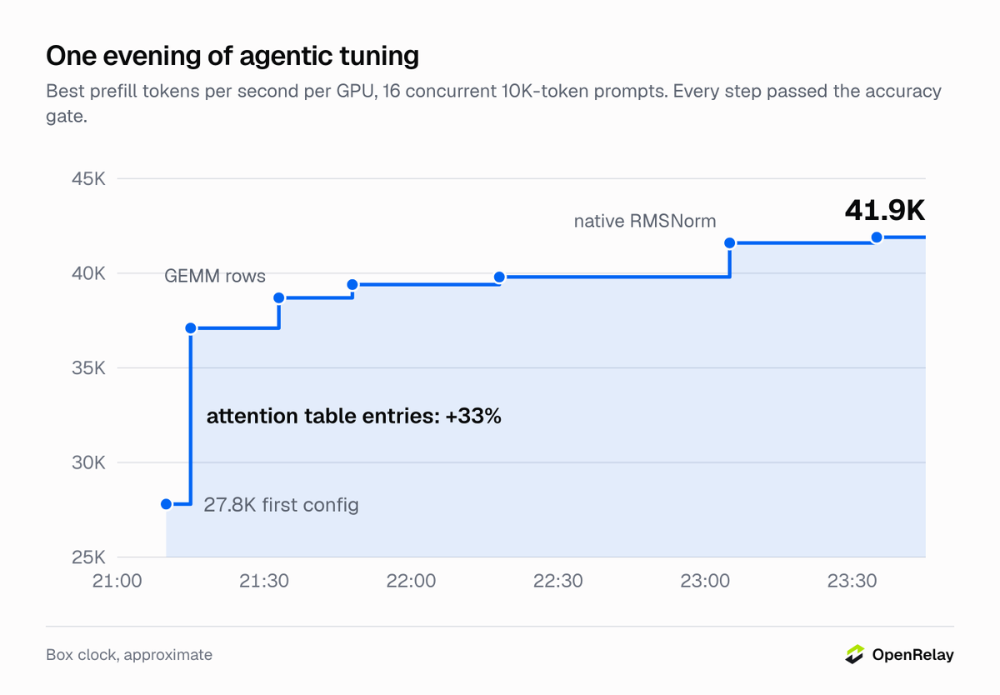
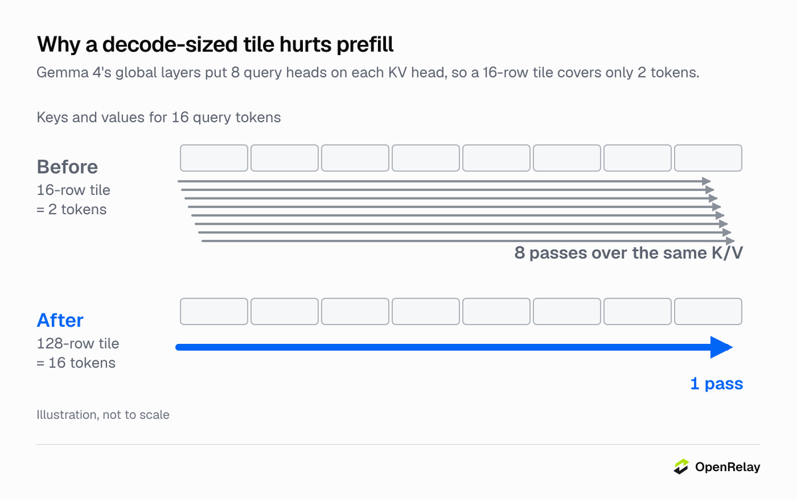
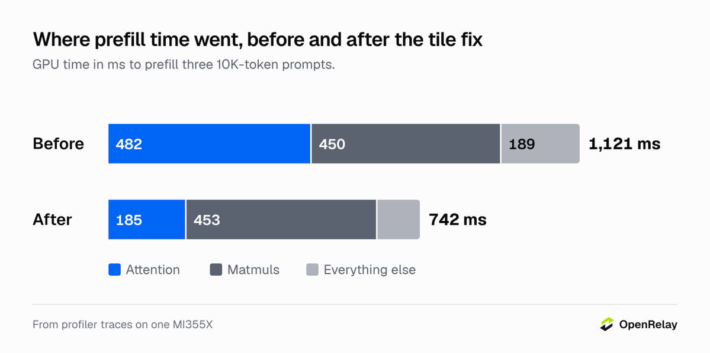
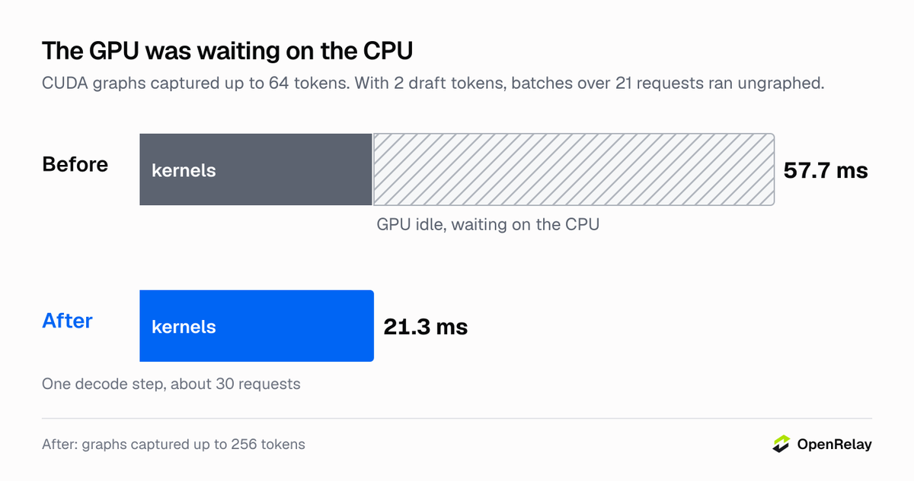
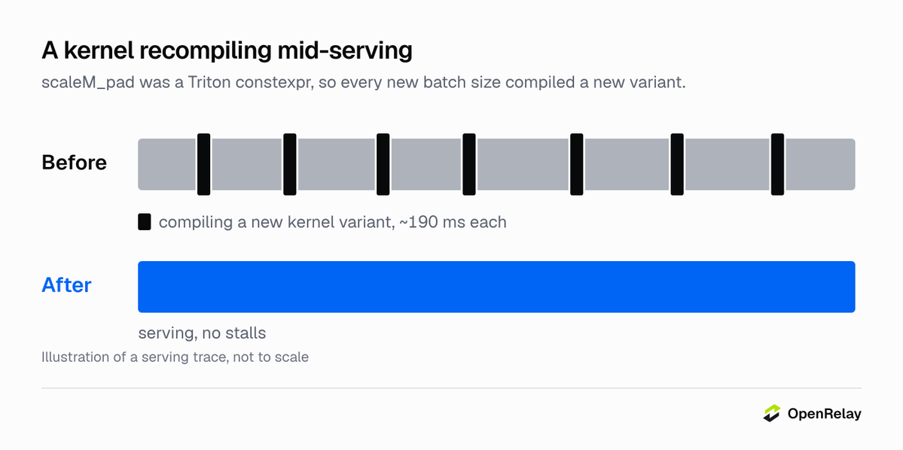
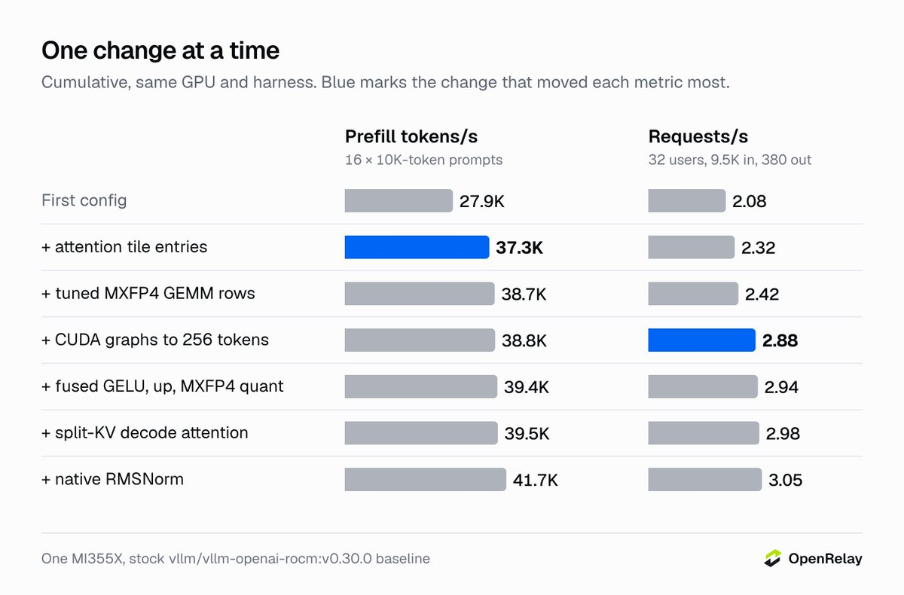
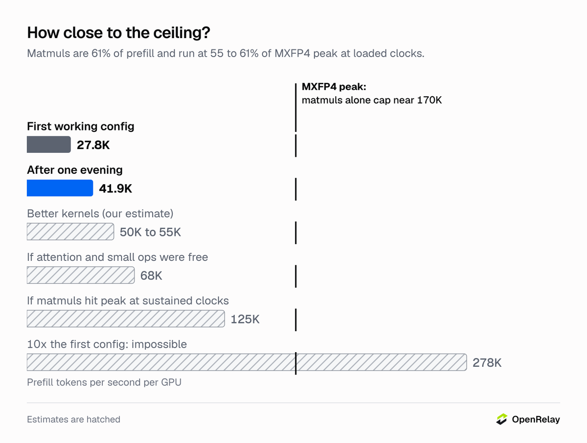
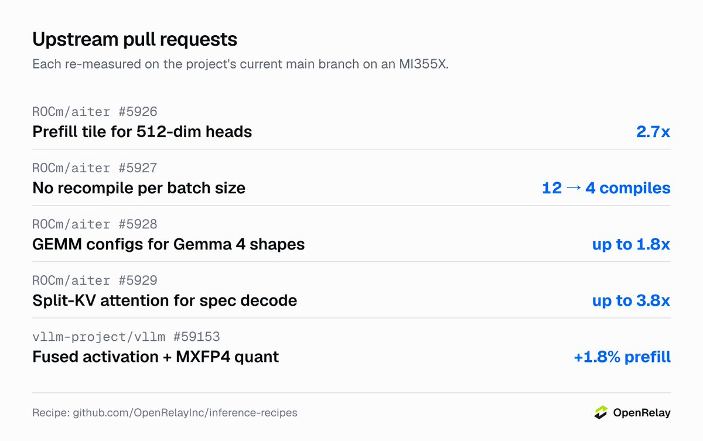

参数表告诉你一块卡理论上能干什么，实际能干什么是另一回事：一堆内核、查找表和开关，多数是为别的模型调的。新卡上跑新模型，第一版往往是能跑、对、但卡在空等。
OpenRelay把Gemma 4 31B搬到MI355X只花了一天跑通，然后让智能体调了一晚上，单卡承载涨了1.5倍。下面把循环机制、四个优化和天花板分析逐一拆开。
Blackwell的NVFP4权重在MI355X上跑不了，于是换成AMD的Quark MXFP4检查点，保留Google的推测解码小模型。权重加小模型约20GB，芯片288GB的HBM大头留给KV缓存，内存这关好过。
计算是另一回事。第一版配置每卡prefill 27.8K token/s，听着还行，算笔账就露馅：矩阵运算只跑到芯片MXFP4峰值的五分之一不到。卡着延迟目标，一块卡最多扛2.0请求每秒。
研究智能体读内核库源码和公开PR，按对这个模型加这块卡的可能收益排序；调优智能体在真卡上一次只改一处， profiling、提假设、跑实验，更快且GSM8K不低于96.5%才保留。
正确性门是绝不跳过的一步：更快的内核如果改变模型答案，直接当bug处理。调优智能体把一切写进日志，错的也写。这次它就抓到自己一个乌龙：新引擎因旧引擎占着端口没起来，一轮benchmark悄悄测的是旧引擎，它扔掉那批数字，还把启动器改成拒绝占用的卡。
Gemma 4这轮给了它四块MI355X和一个晚上。

基线是自家第一版MI355X配置，跑stock vllm/vllm-openai-rocm:v0.30.0，不跟B200比厂商。负载测试开环，每档300秒、两个种子，请求平均输入9.5K token、输出380个。
4秒p95 TTFT目标下，单卡从2.0涨到3.0请求每秒；16个10K token提示并发下prefill从27.8K涨到41.9K token/s；该负载下每输出token中位数从40到43毫秒降到22毫秒；GSM8K（250题）98.8%对98.8%，纹丝不动。

prefill涨幅的三分之二在前十分钟落地，剩下的是长尾小胜，每一处单独计量。

开工七分钟，第一份profile回来：prefill的GPU时间里注意力占43%，对这个尺寸的模型来说太多了。
AITER按GPU架构从JSON表里选注意力tile尺寸，MI355X（gfx950）的表里没有256维及以上头的prefill项，而Gemma 4两种都有：50层滑动窗口层是256维头，10层全局层是512维头。于是prefill回退到给decode准备的tile，每program只算16个query行；全局层8个query头共享一个KV头，16行就是2个token，每个K/V tile每2个token被重读一遍。
研究智能体读AITER源码时已把这条排在最前。修法就是加一条表项，按长query键控，decode继续用它的tile：

"D_GEQ_512.Q_GEQ_256.DT_fp8_fp8": {"BLOCK_M": 128, "TILE_SIZE_MIN": 64, "TILE_SIZE_MAX": 64,
"num_warps": 4, "num_stages": 1, "waves_per_eu": 1}
全局层内核从每步10.6毫秒降到3.9毫秒，滑动窗口内核从1.37毫秒降到0.59毫秒，prefill涨三分之一，GSM8K不动。修完矩阵乘法占prefill的61%，GPU的时间就该花在这。
有负载时，一个约30请求的decode步要57.7毫秒，其中内核只占21.3毫秒，GPU忙碌率37%。
引擎的CUDA graph（ROCm上叫HIP graph）只capture到64个token。加2个draft token后每个请求每decode步3个token，batch超过21个请求就miss graph，每个内核都由CPU逐个发射。
capture到256个token就是一个开关的事，代价是7秒启动时间和3.1GiB内存，decode步缩到原来的2.7分之一。32用户下每秒请求从2.42涨到2.88。

一个融合GELU加MXFP4量化的内核初看像regression，trace解释了一切：服务中段七个约190毫秒的空转间隙。
AITER把填充行数scaleM_pad声明成Triton编译期常量，每个新batch大小（按256向上取整）都编译一个内核变体。改成运行期参数就好。在AITER主分支上，14种batch大小现在只要编译4次而不是12次，输出逐比特一致。

● 按Gemma 4精确形状调的MXFP4 GEMM配置：prefill加4%。
● 融合GELU、上投影和MXFP4量化内核：加1.5%。

● 推测解码步上512维层的split-KV注意力。
● 原生RMSNorm，让torch.compile把周围的切分、norm、RoPE融起来：加6%。
● 8192个token的prefill分块，每输出token时间下降，prefill不涨。
没起作用的：Triton和hipBLASLt的MXFP4 GEMM比AITER汇编内核慢2.5倍；vLLM的QK-norm和RoPE融合pass对不上Gemma 4的布局；CUDA graph capture到16K token，白花14GiB没收益；128并发序列，吞吐多1到3%，每token时间翻倍；第三个draft token，每token时间降7%到10%，但容量不涨。
现在矩阵运算占prefill的61%，这些内核在负载时钟下跑到MXFP4峰值的55%到61%。更好的内核也许再买1.2到1.3倍；注意力加小算子如果免费，prefill到68K token/s；matmul也跑满峰值，到125K。第一版的10倍需要线性层alone约17 PFLOP/s，远超芯片约10 PFLOP/s的MXFP4峰值，不可能。

智能体改的所有东西都在OpenRelayInc/inference-recipes：Dockerfile、调好的表、补丁、每个数字背后的benchmark harness。该进上游的修法都提成PR，在项目主分支的MI355X上重测：ROCm/aiter#5926（512维头的prefill tile）、#5927（batch大小不再重编译）、#5928（Gemma 4形状的GEMM配置）、#5929（推测解码的split-KV注意力）、vllm-project/vllm#59153（融合激活加MXFP4量化）。
有一个修法没进：AITER主分支的新MI355X注意力内核跑Gemma 4滑动窗口层比调好的tile还快（0.55毫秒对0.61），就让它留在上游了。
升级注意：vLLM v0.30.0之后AITER汇编MXFP4 GEMM改成opt-in，不开VLLM_ROCM_USE_AITER_FP4_ASM_GEMM=1的话，新nightly上Gemma 4 prefill从27.7K掉到18.9K token/s。

三个改动是stock镜像上的纯开关：
--max-num-batched-tokens 8192
--compilation-config '{"cudagraph_capture_sizes":[1,2,4,8,16,24,32,48,64,80,96,112,128,144,160,176,192,224,256]}'
--kernel-config '{"ir_op_priority":{"rms_norm":["native"]}}'参考：https://x.com/OpenRelayInc/status/2105046346722058495